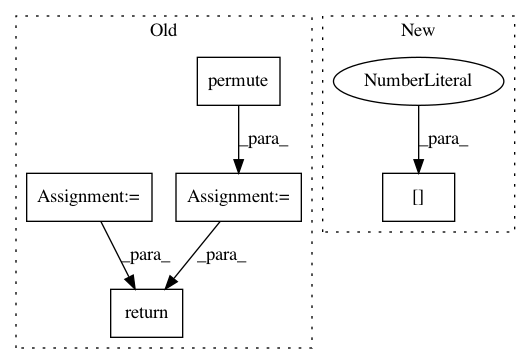

4b3ca2794fe54a4b71ab2bdaea57cfd01c2f2849,models/model_utils.py,psi,forward,#psi#,58
Before Change
return output.contiguous()
def forward(self, input):
output = input.permute(0, 2, 3, 1)
(batch_size, s_height, s_width, s_depth) = output.size()
d_depth = s_depth * self.block_size_sq
d_height = int(s_height / self.block_size)
t_1 = output.split(self.block_size, 2)
stack = [t_t.contiguous().view(batch_size, d_height, d_depth) for t_t in t_1]
output = torch.stack(stack, 1)
output = output.permute(0, 2, 1, 3)
output = output.permute(0, 3, 1, 2)
return output.contiguous()
class ListModule(object):
def __init__(self, module, prefix, *args):
After Change
def forward(self, input):
bl, bl_sq = self.block_size, self.block_size_sq
bs, d, new_h, new_w = input.shape[0], input.shape[1], input.shape[2] // bl, input.shape[3] // bl
return input.reshape(bs, d, new_h, bl, new_w, bl).permute(0, 3, 5, 1, 2, 4).reshape(bs, d * bl_sq, new_h, new_w)
In pattern: SUPERPATTERN
Frequency: 3
Non-data size: 5
Instances
Project Name: jhjacobsen/pytorch-i-revnet
Commit Name: 4b3ca2794fe54a4b71ab2bdaea57cfd01c2f2849
Time: 2020-05-06
Author: simon.pezold@web.de
File Name: models/model_utils.py
Class Name: psi
Method Name: forward
Project Name: ncullen93/torchsample
Commit Name: f4ca9b361adb382423c753f7f864a5dd0e454964
Time: 2017-05-12
Author: ncullen.th@dartmouth.edu
File Name: torchsample/transforms/tensor_transforms.py
Class Name: ChannelsFirst
Method Name: __call__
Project Name: ncullen93/torchsample
Commit Name: f4ca9b361adb382423c753f7f864a5dd0e454964
Time: 2017-05-12
Author: ncullen.th@dartmouth.edu
File Name: torchsample/transforms/tensor_transforms.py
Class Name: ChannelsLast
Method Name: __call__